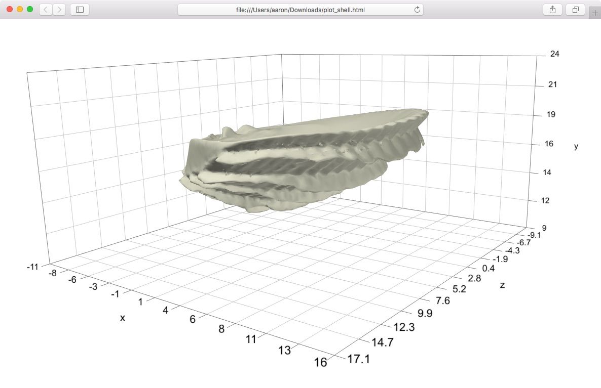

Plotting a mesh
This tutorial will show you how to plot an untextured mesh (specifically an OBJ file) to a standalone html file using the R package svgViewR. This tutorial uses a new WebGL-based plotting mode added in svgViewR 1.3 and implemented using the three.js Javascript library. The uninterrupted block of code can be found at the end of this tutorial.
Preliminary steps
Make sure that you have R installed on your system (you can find R installation instructions here). You will also need to install the latest version of the R package svgViewR on CRAN. This tutorial uses a new plotting mode in svgViewR, webgl, that was added with the 1.3 version, so ensure that you have svgViewR version 1.3 or greater. The webgl currently supports only a few shape types. See the left panel for which shapes can be plotted in svg (old, default) or webgl (new) mode.
# Install the svgViewR package (if not already installed) install.packages('svgViewR', dependencies=TRUE)
Plotting a mesh
Start by loading the svgViewR package into the current R workspace.
## Plotting a mesh # Load the svgViewR package library(svgViewR)
If you'd like to try out this tutorial with an OBJ file you can download this OBJ of a seashell (2 MB), courtesy of my colleague Stewart Edie. Thank you Stewart for allowing me to feature this beautiful shell here! This shell is just one of over 1500 species of marine bivalve that he and his colleagues have CT scanned as a part of a fantastic project (biv3d) to CT scan every living marine bivalve species. Save the seashell.obj file to your current R working directory.
An untextured mesh simply consists of vertices, vertex normals, and faces. An OBJ file contains all of this information but not in a format that will be readable by a web browser. In order to plot an OBJ mesh using svgViewR you'll first need to convert the OBJ file to the JSON file format. You can do this using the svgViewR function objToJSON.
# Convert OBJ file to JSON objToJSON(obj='seashell.obj', file='seashell.json')
Now that we have a compatible file format, open a connection to a new svgViewR .html file. All of the shapes that you draw will be written to this .html file. Once you're finished plotting, you'll be able to open this file in a web browser and view the shapes as an interactive visualization. All of the needed code is contained within this html file which will allow you to share this file so others can view the visualization (they do not need to have R installed to view it). Note that mode must be set to webgl to plot meshes; this will eventually become the default mode.
# Open a connection to .html file svg.new(file='plot_shell.html', mode='webgl')
To add the mesh, use the svg.mesh function.
# Add mesh mesh_lim <- svg.mesh(file='seashell.json')
The svg.mesh function outputs the limits and corners of the bounding box around the plotted mesh, which may be useful for subsequent plotting. You can input an OBJ file directly to svg.mesh but the function will still have to run objToJSON to convert the file to a compatible type. So if you're continually plotting the same OBJ file it's faster to perform the JSON conversion once.
Optionally, add a frame around any currently plotted shapes. Note that the mesh is plotted following the vertices in the mesh file. Therefore the position and scaling of the mesh (and a coordinate axis around the mesh) will be based on the mesh vertices.
# Add coordinate axis planes around the mesh svg_frame <- svg.frame()
Once you're done plotting, call the svg.close function. This takes all of the shapes saved to an svgViewR environment, writes them to the .html file, and closes the connection.
# Close the file connection svg.close()
You can now open the resulting .html file.
To rotate the graphic left-click and drag the cursor. To move (translate) the graphic right-click and drag the cursor. To zoom scroll in and out. To return to the initial orientation of the graphic (or to see changes if you re-write the file) refresh the browser.
Setting the mesh color
The default color for a mesh is an off-white tone. You can set the color using the col parameter to create, for example, a blue shell.
## Setting the mesh color # Open a connection to .html file svg.new(file='plot_blue_shell.html', mode='webgl') # Add mesh mesh_lim <- svg.mesh(file='seashell.json', col='DodgerBlue') # Close the file connection svg.close()
Uninterrupted code
## Plotting a mesh # Load the svgViewR package library(svgViewR) # Convert OBJ file to JSON objToJSON(obj='seashell.obj', file='seashell.json') # Open a connection to .html file svg.new(file='plot_shell.html', mode='webgl') # Add mesh mesh_lim <- svg.mesh(file='seashell.json') # Add coordinate axis planes around the mesh svg_frame <- svg.frame() # Close the file connection svg.close() ## Setting the mesh color # Open a connection to .html file svg.new(file='plot_blue_shell.html', mode='webgl') # Add mesh mesh_lim <- svg.mesh(file='seashell.json', col='DodgerBlue') # Close the file connection svg.close()